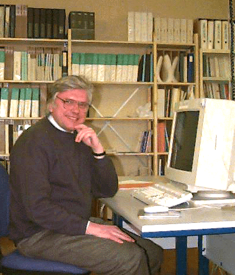

- popentiu@inf.enst.fr
 popentiu@eeee.unesco.pub.ro
popentiu@eeee.unesco.pub.ro
UNESCO Chair Homepage
A java applet for software reliability : SOFTRELY-WEB_v1.1

Prof. Florin Popentiu Vladicescu "Politechnica" University of Bucharest, UNESCO, 313, Splaiul Independentei, Bucharest, Romania Phone: +401 411 1721 Fax: +401 411 1769 e-mail:popentiu@eeee.unesco.pub.ro
Telecom Paris, ENST, Dep Inf., 46 rue Barrault, 75634, Paris Cedex 13, France. Phone: +33 1 45 81 73 74 Fax: +33 1 45 81 31 19 e-mail:popentiu@inf.enst.fr
Dr. Florin Popentiu Vladicescu is currently Professor of Software Engineering at UNESCO Department University "Politehnica" of Bucharest and Visiting Professor at
Prof. Florin Popentiu Vladicescu has published over 85 papers in International Journals and Conference Proceedings and is co-author of 2 books.
He has worked for many years on problems associated with software reliability and at present is Co-Director of a NATO research project involving collaboration with partner institutions throughout Europe. He is on the Advisory Board of Several International journals. Dr Florin Popentiu Vladicescu was elected active member of The New York Academy of Science.
Prof. Popentiu Vladicescu is currently Visiting Professor at Telecom Paris, ENST
where he teaches a course on Fiabilité du logiciel
popentiu@eeee.unesco.pub.ro